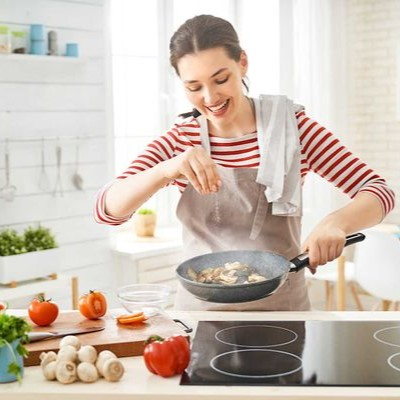

Virksomheder har brug for at tage et aktivt skridt til at begrænse madspild i produktionen og gøre virksomheden mere bæredygtig. De kan evaluere deres produktionsprocesser og identificere områder, hvor e kan reducere spild, investere i teknologi, der hjælper med at overvåge madspild og samarbejde med leverandører og donation organisationer.
Lad os sammen tage små skridt og skabe en kultur, der fremmer bæredygtighed og ansvarlig madhåndtering. Sammen kan vi gøre en positiv indvirkning på vores samfund og miljøet. Tak for jeres tid.
Optimer produktionsprocesserne: Virksomheder kan overveje at optimere deres produktionsprocesser for at mindske spild. Dette kan omfatte at implementere mere præcise målinger og styring af ingredienser, justering af produktionslinjer for at reducere tab og affald, og overvågning af produktionen for at opdage og rette eventuelle problemer.
Forbedr kvalitetskontrollen: Virksomheder kan investere i bedre kvalitetskontrol for at sikre, at produkterne er i overensstemmelse med de krævede standarder og derfor ikke bliver afvist og smidt væk på grund af fejl eller mangler.
Optimer produktionsplanlægningen: Virksomheder kan planlægge deres produktion mere effektivt for at undgå overproduktion, som kan føre til spild. Dette kan omfatte at indsamle og analysere data om salgsprognoser og produktionstider, og bruge disse oplysninger til at justere produktionen og undgå overskud.
Implementer genanvendelsesprogrammer: Virksomheder kan implementere genanvendelsesprogrammer for at reducere spild og affald. Dette kan omfatte at genbruge ingredienser og rester til andre formål, som f.eks. dyrefoder, kompostering eller biogasproduktion.
Planlæg dine måltider: Planlæg dine måltider på forhånd, så du ved, hvad du vil spise i løbet af ugen. Tjek din madbeholdning i køleskabet, fryseren og skabe, og køb kun de nødvendige ingredienser for at undgå overkøb.